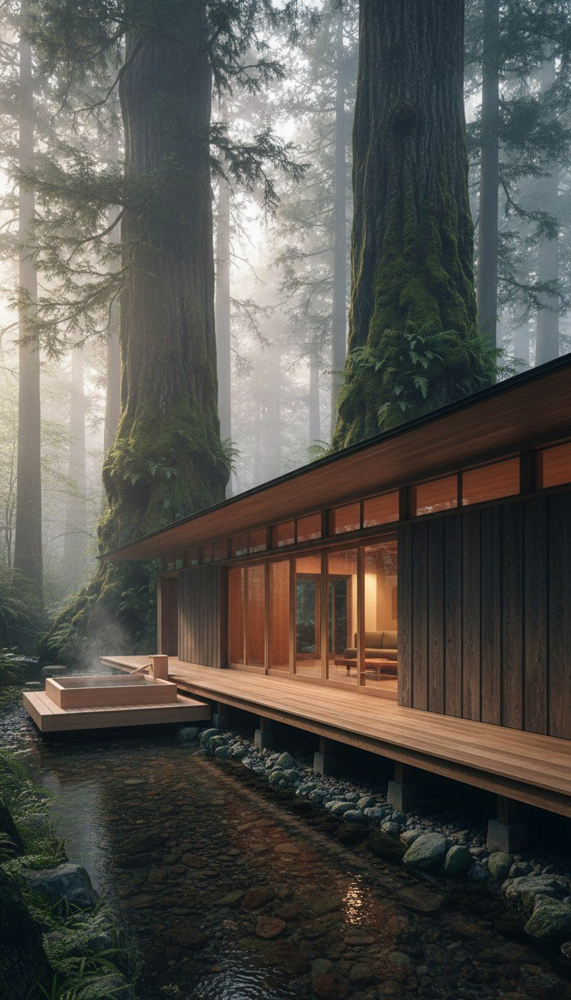

AI-generated concept home. Not a real property or product. It is not for sale or for rent. The products suggested below are real Amazon listings, chosen in the spirit of the house. The images on this page are AI-generated, not photographs of a real place.
It starts with steam. Just the surface of hot water in a wooden tub, dark and still, with a soft curl of vapour lifting off it into cool morning air. The rim is smooth pale cypress. Behind it, out of focus, a wall of thin cedar slats. You can almost smell it: wet wood, warm water, forest.
Most houses are built around a kitchen, or a view. This one is built around a bath.
Some links on this page are Amazon affiliate links. We may earn a commission at no extra cost to you.
As an Amazon Associate I earn from qualifying purchases.
Light through the slats
The bath room is a quiet box of cedar and dark stone. Morning sun comes in through a screen of vertical slats, and the steam catches it, so the light falls in thin glowing rays across the floor. There is a wooden bucket and a low stool beside the tub, which is how a Japanese bath works: you wash first, sitting on the stool, and only then do you get in to soak. Nothing in the room is there for show.
Cedar, warm water, and the sound of the creek
Then the bath opens up. A square hinoki tub sits on a small cedar deck that hangs right out over a rushing, rocky creek. Around it, old-growth cedars rise out of the fog, their trunks so wide you couldn’t reach around them, wrapped in deep green moss. Ferns everywhere. A folded linen towel on the edge of the deck.
From inside the bath, you don’t see the house at all. You see water below, trees above and mist in between, and you hear the creek. It is the kind of place where you lose track of how long you’ve been sitting.

The ritual travels well, even without the forest. A plain hinoki stool beside your own tub changes the whole rhythm of a bath: sit, wash, rinse, then soak.

IPPINKA square hinoki bath stool, made in Japan
A low stool of Japanese cypress for washing before the soak, the way a Japanese bath is used.
View on AmazonInside, just timber, glass and quiet
The living room is low and calm. Pale cedar on the walls and ceiling, tatami on the floor, a low linen sofa, a sunken hearth for cold nights, and one paper lantern glowing in the corner. One whole wall is glass, floor to ceiling, and on the other side of it is the forest and the creek, so the room feels less like a room and more like a clearing you’ve found among the trees.
That single paper lantern does a lot of work. Rice paper turns a bulb into something soft and diffuse, the light of a lamp seen through mist, and it is the easiest piece of this house to bring home.

LianHeng rice paper floor lamp
A tall oval rice-paper shade on a slim metal frame, with a foot switch; bulbs not included.
View on AmazonOff the veranda, the creek
A wide wooden veranda, an engawa, runs along the house. Sit on its edge and the creek is right there below your feet, clear water sliding over mossy boulders and wet dark stones, the cedars rising out of the fog on the far bank. In the morning the light is cool and soft. It is where you’d drink your first tea.
Step back, and the house melts into the cedars
Only now, more than halfway through, does the reel show you the house itself. Seen from the creek bank, it is a set of long, low cedar-clad volumes with deep overhanging eaves and walls of glass, warm light inside, the bath deck reaching out over the water. It doesn’t stand against the forest. It sits inside it, low and quiet, almost the same colour as the trunks around it.

Imagine coming home to this every night
Then blue hour. From across the creek, every window glows amber. The bath is lit softly and still steaming. A few small paper lanterns hang along the veranda. The whole house is mirrored in the dark moving water, and the cedars fade behind it into blue mist.
This is the frame the reel ends on, and it is the one we keep coming back to. Not a mansion. A warm, lit house in a cold, quiet forest, and a hot bath waiting.
Would you live here?
Some homes impress you. This one slows you down. We’d trade a lot of square footage for a bath over a creek and a glass wall onto the cedars.
Tell us in the comments on the reel whether you’d move in, and which of the five dream homes this week is yours.
The images on this page and the reel’s visuals and voice are AI-generated. This is a concept home, not a real property.
The products above are our suggestions in the spirit of the house; they are not items shown in the reel. Product details: each linked Amazon.com listing, loaded 23 Nov 2026 (America/Toronto).